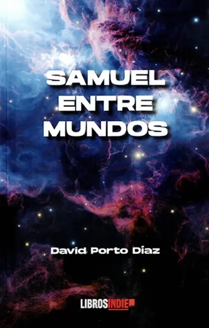

Portales entre mundos
Una barrera que cede. Un paso que no debería ser posible y que cambia el rumbo de todo lo que Samuel creía saber sobre su familia y sobre sí mismo.

Novela de fantasía · Debut literario · 2025
La medalla no brilla. Late.
Una novela de fantasía y aventura donde los portales tienen precio, los secretos de familia pesan más que la magia y la verdad que buscas puede ser exactamente lo que te destruye.
★★★★★ Goodreads · Primer Premio Letras Como Espada · Finalista Premio Nacional Literatura Infantil
Sinopsis
Samuel entre mundos narra la historia de Samuel Osborne, un joven de ojos verdes cuya medalla despierta el poder de los canalizadores con conciencia en la ciudad de Noveris. La trama enfrenta a las facciones Zunthar y Marelian tras la Guerra de los Cristales, explorando el precio de la magia y el misterio del Espejo Ancestral.
Samuel Osborne siempre ha sabido que algo no encaja. No en su familia, no en el mundo que conoce, no en el peso extraño de la medalla que lleva al cuello desde niño. En Noveris, la ciudad construida sobre silencios y normas inamovibles, todo tiene su lugar. Todo, excepto él.
Cuando la barrera entre mundos empieza a ceder y la medalla comienza a latir con vida propia, Samuel descubre que no es un accidente ni un error. Es el motivo. La respuesta al por qué está al otro lado: en el Espejo Ancestral, guardado por Grimlor, vigilado por las silenciadoras — criaturas que no perdonan las preguntas equivocadas.
Samuel entre mundos es una novela de fantasía y aventura escrita por el autor gallego David Porto Díaz. Una historia donde los portales entre mundos son reales pero tienen un coste, los secretos de familia revelan verdades que cambian para siempre, y la magia nunca se da sin exigir algo a cambio.
Para lectores de fantasía juvenil y romantasy en español que buscan aventura, identidad y un mundo construido con sus propias reglas.
Dentro del libro
Una barrera que cede. Un paso que no debería ser posible y que cambia el rumbo de todo lo que Samuel creía saber sobre su familia y sobre sí mismo.
En Noveris no hay magia gratuita: cada canalización desplaza energía, memoria o estabilidad corporal. Un vínculo mal elegido con un canalizador puede deformar huesos, saturar nervios o romper la percepción del portador.
La medalla de los Osborne lleva generaciones guardando un secreto. Cuando la verdad sale, no todo el mundo sobrevive a ella de la misma forma.
El Espejo Ancestral funciona como una interfaz de lectura identitaria: no devuelve apariencia, sino estructura interna, vínculo familiar y fracturas ocultas. Por eso su información puede ser más peligrosa que una visión.
Grimlor no espera. Las silenciadoras tampoco. El tiempo entre mundos no funciona igual, y Samuel está corriendo una carrera sin saber cuándo termina el camino.
«Siempre tiene lista una nueva sorpresa, un giro inesperado que hace que no quieras parar de leer.» — Carlos, lector en Goodreads.
¿Es este libro para ti?
Si disfrutas estos géneros y temas, Samuel entre mundos es tu siguiente lectura.
Si te gustan las historias de portales entre mundos, protagonistas que descubren una identidad oculta y sistemas de magia con consecuencias reales, encontrarás en Samuel entre mundos exactamente ese tipo de lectura — con voz propia y en español.
Descúbrete
5 preguntas para saber dónde encajarías en el mundo de Samuel entre mundos.
Pregunta 1 de 5
Lectores
«El ritmo del libro es trepidante y siempre tiene lista una nueva sorpresa, un giro inesperado que hace que no quieras parar de leer.»Carlos · Goodreads · enero 2026
«Desde las primeras páginas te envuelve con su intriga, su magia y su espíritu aventurero, atrapándote en un viaje del que ya no quieras bajarte.»Manuel Corrochano · Goodreads · diciembre 2025
Disponible ahora
Disponible en papel en las principales librerías online y en librerías físicas bajo pedido con el ISBN.
También disponible bajo pedido en tu librería habitual. ISBN: 9791387659776
Datos del libro
Preguntas frecuentes
Es una novela de fantasía y aventura protagonizada por Samuel Osborne, un chico que descubre que la medalla que lleva al cuello desde niño no es solo un objeto familiar: es la clave de una conexión con Noveris, un mundo paralelo regido por reglas estrictas y protegido por las silenciadoras. La historia combina portales entre mundos, secretos de familia, una magia con coste real y una amenaza que no da tregua.
Samuel entre mundos es el debut de David Porto Díaz como novelista. La historia tiene final cerrado y funciona como lectura independiente. Si hay continuación, se anunciará en la web oficial y en redes.
El libro tiene 409 páginas en formato tapa blanda. El público objetivo es amplio: lectores jóvenes y adultos que disfrutan de la fantasía con sistemas de magia propios, aventura y personajes en proceso de descubrir su identidad. Es apta para lectores a partir de 14-15 años.
En Amazon España, Casa del Libro, Librería Le, Serendipia y la editorial Libros Indie. También puedes pedirlo en cualquier librería física con el ISBN: 9791387659776.
De momento Samuel entre mundos solo está disponible en formato tapa blanda. No existe edición en ebook ni audiolibro por ahora.
Combina fantasía, aventura y toques de romantasy. Si te gustan las historias de portales entre mundos, sistemas de magia con consecuencias reales y protagonistas que descubren una identidad oculta, es tu lectura. Una propuesta española con voz propia dentro del género.
Su autor, David Porto Díaz, obtuvo el Primer Premio en el XII Certamen de Microrrelatos «De amor» de Letras Como Espada (2026) y fue seleccionado entre los diez finalistas del Premio Nacional de Literatura Infantil Juan Andrés Teno (babidibulibros, 2025).
Sí. Para clubes de lectura o mensajes directos escríbele a samuelentremundos@gmail.com. Para prensa, entrevistas o firmas, consulta el kit de prensa completo.
El autor
David Porto Díaz nació en Pontevedra y reside en Madrid. Con formación en marketing online y experiencia en el sector tecnológico, entiende tanto la sensibilidad del lector como la estructura que sostiene una historia. Esa combinación —análisis, ritmo y mirada hacia el público— atraviesa también su forma de escribir.
Samuel entre mundos (Libros Indie, 2025) es su debut como novelista. Participó también en la antología colaborativa La memoria de las tierras del norte (Diversidad Literaria) y tiene una segunda novela en proceso de publicación con Monza Ediciones: Las manecillas del recuerdo.
Primer Premio en el XII Certamen de Microrrelatos «De amor» de Letras Como Espada (2026). Finalista en el Premio Nacional de Literatura Infantil Juan Andrés Teno (2025).

Escritor · Madrid
Debut con Samuel entre mundos y segunda novela en camino con Monza Ediciones.